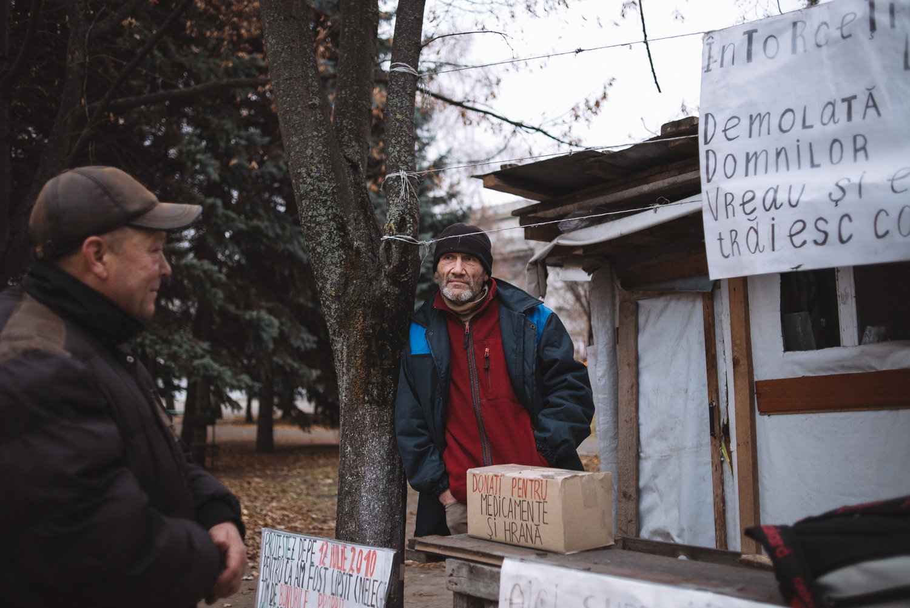
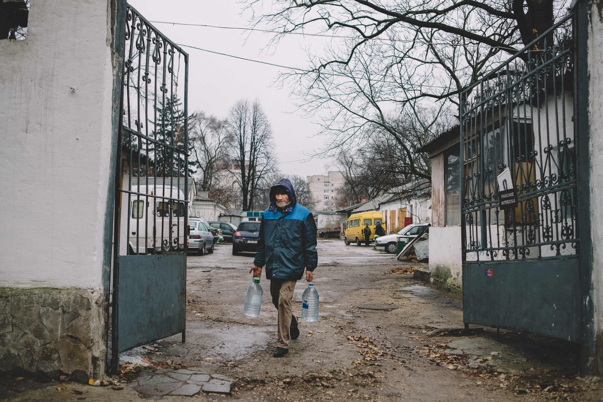

Ramin told us this story of a veteran of the Transnistrian war on the Moldovan side. The man suffered an injury but remained until the end of the conflict. After returning home, his injury persisted to cause problems until the point he had to seek treatment. Upon his arrival back to Causeni, he was confronted with a house left in ruins, demolished by the government. After several attempts to talk to the local authorities he came to the central square in Chisinau, Moldova, and built a hut from scraps and started his protest asking for house. He is now seven years into his protest.
 "My name is Tudor Pinzari and I grew up in an orphanage in Benderi, Moldova. I once heard the first Moldavian president Mircea Snegur urge people on the radio to defend the motherland and be a volunteer in the Transnistrian conflict."
"Just like many others I enlisted for military service and was taken to Benderi. That’s when it started to get tough for me. I was contused during the conflict, but after the hospital I stayed on the frontline until the very last day."
"When everything was finished, I came back to Causani and during all of the 1990s I worked as a tractor driver at a collective farm in the countryside."
"In 2002 my leg and arm became paralyzed and I had to get treatment. When I returned to my home it had been demolished and everyone, except for me, me took apartments in Causeni in return. I couldn’t break the wall of corruption and bureaucracy so I went to Chisinau to seek justice."
"I want justice and I don’t want to hide from my problems as most of the people in our country do."